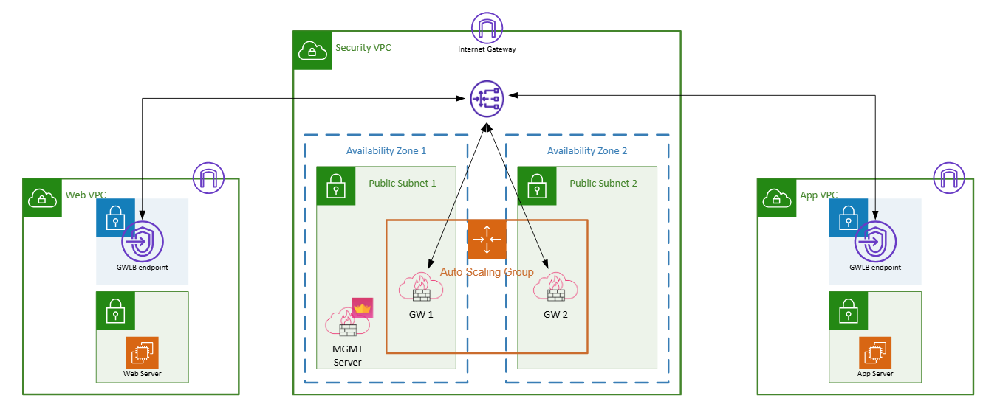

Lab1 - GWLB

This lab will be split to 3 diferent problems which you will need to solve in the assigned order
Lab objectives
Lab objectives
Lab objectives
Make sure the MGMT server has finished FTW.
api status | Do not proceed forward before this is ready!Run the Auto-MGMT script.
/var/log/automgmt.shCredentials: